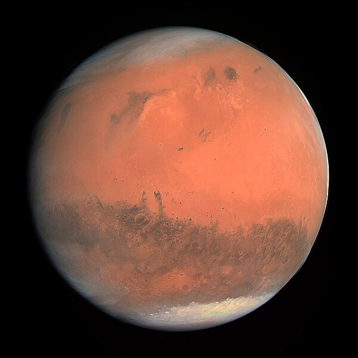

Марс
Марс — четвёртая по удаленности от Солнца планетой Солнечной системы. Марс — планета земной группы с тонкой атмосферой. Его поверхность напоминает как ударные кратеры Луны, так и вулканы, пустыни, долины и полярные шапки Земли. На Марсе находится самая высокая горная вершина Солнечной системы — гора Олимп. Период вращения и смена сезонов на Марсе очень похожи на земные. Марс имеет два естественных спутника: Фобос и Деймос (в переводе с греческого: «страх» и «ужас»). Вероятно, это бывшие астероиды, захваченные гравитационным полем планеты и застрявшие на её орбите.После первого облета планеты космическим аппаратом «Маринер-4» в 1965 году было высказано предположение, что на поверхности Марса есть вода. Марс является наиболее вероятным местом для обнаружения воды или даже жизни. Марс — наиболее подробно изученная планета Солнечной системы после Земли.
Названа в честь Марса — древнеримского бога войны, чей щит и копье образуют символ планеты (♂).